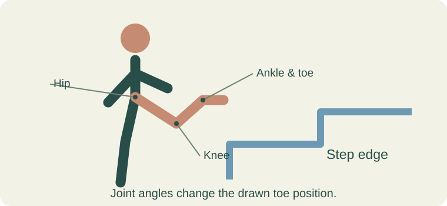
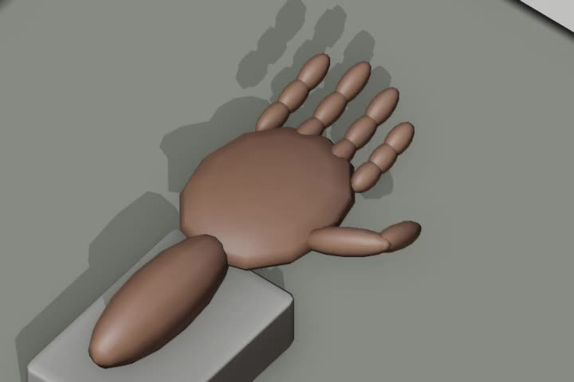
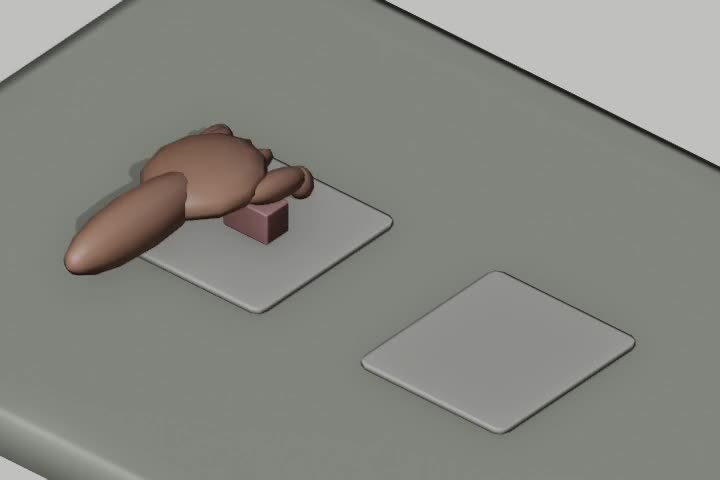
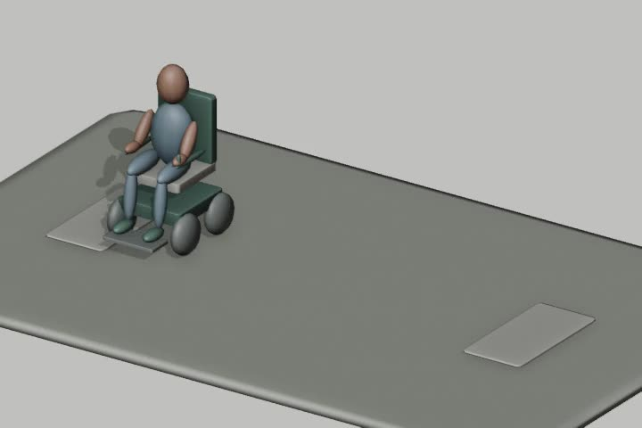

03 / NOTICE. EXPLORE. REST.
Move Forward
Explore a movement model or choose a tutorial. There is no single pace or movement pattern to match.
Explore movement beneath the surface.
A full 3D character and detailed knee, ankle and hand models. Rotate, pause, reveal structures and select a label to learn more.
Open the 3D Anatomy Studio →Which joints change the toe position?


Fingers & fingertips Watch the guides →
Everyday objects Watch the guides →
Moving between places Watch the guides →How joint angles change toe position
Adjust the hip, knee and ankle angles to pose the 3D character beside a step. Turn the view to see how linked joints change the foot’s position.
Educational geometry only. This is not gait analysis, a safe-clearance test or an instruction to copy these angles. It omits balance, muscle forces, orthoses and the full walking cycle. Stair practice needs individual assessment.
Angles and dimensions are illustrative. A drawn position above a step does not mean a person can climb it safely.
From a small movement to a real task

Small movements. Real-life tasks.
Choose a tutorial for full steps, a longer 3D example and a written version. These are schematic illustrations, not an assessment of your movement. Try only movements your therapist has agreed are suitable.